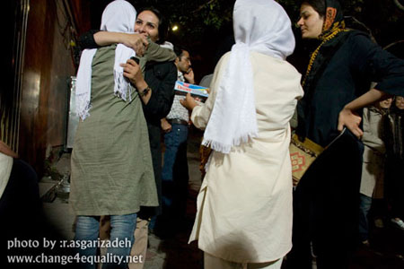
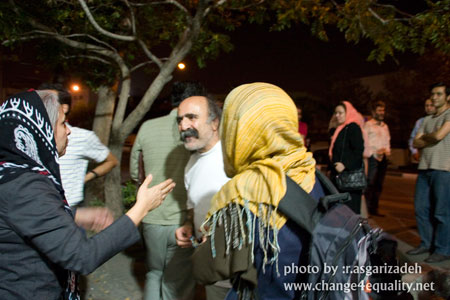
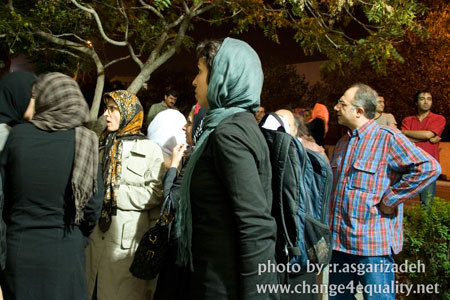

|
|
|
Browsing
Contact Us |
Campaigners |
Face to Face |
Tribune |
Interview |
News |
On the Web |
One Million |
Report
Farsi | Français | German | Italian | Spanish | العربية Also in this section
|
Nine Women’s Rights Activists Released Several Hours After ArrestThursday 12 June 2008 Change for Equality: June 13, 2008: In the early hours of Friday June 13th, nine women’s rights activists who had been arrested outside Rahe Abrisham Gallery where a planned seminar marking the anniversary of women’s day of solidarity was canceled by security forces. The nine women were: Aida Saadat, Nahid Mirhaj, Nasrin Sotoodeh, Jila Baniyaghoob, Nafiseh Azad, Sarah Logmani, Jelve Javaher, Farideh Ghaeb and Alieh Mottalebzadeh. In honor of the national day of solidarity of Iranian women in objecting to discriminatory laws, June 12, women’s rights activists had planned a seminar to review the achievements of the women’s movements as well as the protests held on this day in previous years, on publicizing and popularizing the women’s rights demands. But when organizers arrived at the scene they found the doors of the seminar hall closed and were informed that the seminar had been canceled by security forces, who were at the scene in large numbers. Some organizers stayed behind so that they could inform participants about these developments as they arrived to take part in the seminar. But two of them were arrested while remaining in front of the seminar hall to inform participants and 7 others were arrested within the next few hours. Those arrested were taken to Vozara detention, and released around 1:00 am on Friday morning (about 8 hours after their initial arrest), with a third party guarantee. These women have to follow up to see if any charges will be brought against them. The following year, on the The following are pictures taken in front of the Seminar Hall and at the time of the release of these nine women.


 Three years ago, on June 12, 2005 women’s rights activists organized a well attended protest in front of Tehran university objecting to discrimination against women in the constitution. On June 12 2006, the organized a similar protest in Hafte Tir Square, this time though objecting more specifically to laws that impact women more directly, like discriminatory laws in the civil and penal codes, with emphasis on family law. This protest was violently broken up by police and security forces and over 70 persons arrested. Fourteen equal rights defenders have been sentenced in relation to these arrests. On June 12 2007, women’s rights activists celebrated their national day of solidarity in a private gathering in the home of a women’s rights activists. But since security forces have continuously pressured women’s rights activists in an effort to prevent them from even holding meetings in their homes, this year these women planned a seminar, with participation of 150 people or so, which was unfortunately canceled by security forces. Arrest of Nine Women’s Rights Activists on the Anniversary of the National Day of Solidarity of Iranian Women (22nd of Khordad, June 12) Change for Equality: June 12, 2008; Eight women’s rights activists were arrested today, on the anniversary of the national day of solidarity of Iranian women (22nd of Khordaad, June 12). Those arrested are: Aida Saadat, Nahid Mirhaj, Nafiseh Azad, Nasrin Sotoodeh, Jelve Javaheri, Jila Baniyagoub, Sarah Loghmani, Farideh Ghaeb and Alieh Motalebzadeh . These women were arrested outside the Rahe Abrisham Gallery, where a seminar was scheduled to take place in honor of the anniversary of the day of solidarity of Iranian women. When women’s rights activists arrived at the Seminar hall, they found the doors closed. Security officers were present in large numbers outside the Seminar Hall. The owner of the Gallery was forced to close the doors of his seminar hall, after being pressured by security forces. Aida Saadat and Nahid Mirhaj had stayed behind to inform participants about the cancellation of the seminar. But they were arrested by security police. Following their arrest, Nasrin Sotoode and Jilla Baniyaghoub were arrested when they came to follow up on the situation arrest of their friends. According to those present at the scene, Nafiseh Azad, Sarah Loghmani, Jelve Javaheri Farideh Ghaeb and alieh Motalbezadeh were arrested shortly afterwards. According to a statement issued by the coordinating committee of the seminar, officials have systematically denied women’s rights activists permits to hold peaceful public demonstration and protests. Even small protests by women’s rights activists have been violently attacked by security forces and police. Additionally, women’s rights activists have been systematically denied the right to convene meetings and seminars and meetings in their private homes too have been broken up. It is unfortunate that security forces fear the convening of simple meetings with limited participants of about 100-150 to such a degree. Please stay tuned for further news on these arrests, as well as information on potential other arrests. Forum posts:2 |